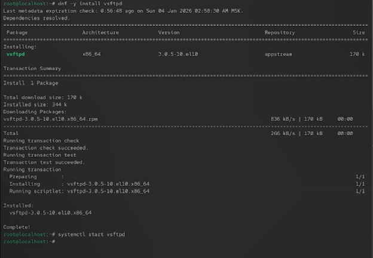
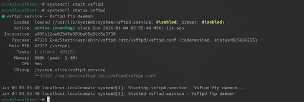
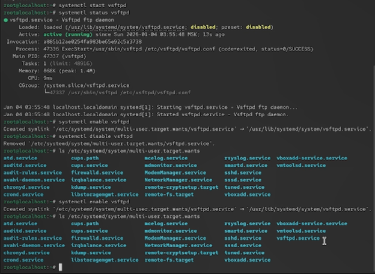
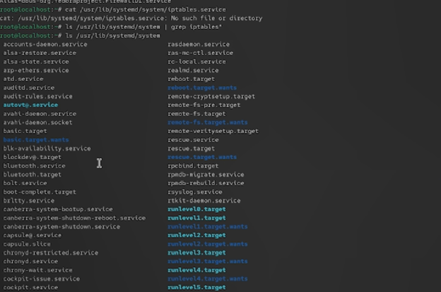
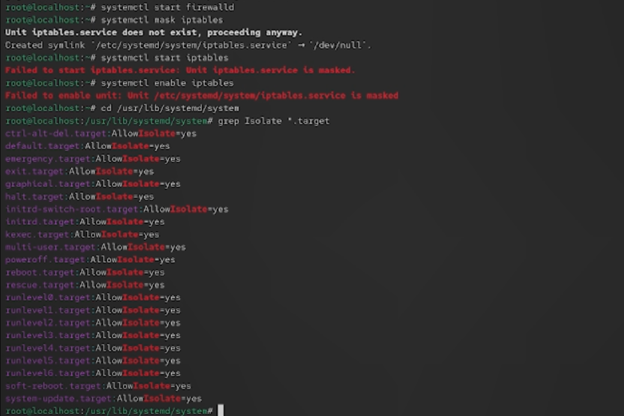
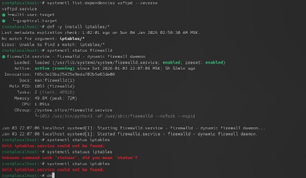
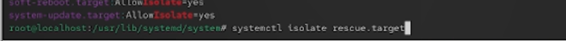
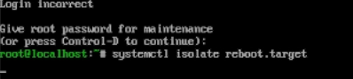

Получить навыки управления системными службами операционной системы посредством systemd.

Рис. 1 — Проверка статуса службы vsftpd (сервис не найден)
-.

Рис. 2 — Запуск и проверка статуса vsftpd
Рис. 3 — Добавление vsftpd в автозапуск
-.

Рис. 4 — Удаление vsftpd из автозапуска
-.

Рис. 5 — Проверка каталога multi-user.target.wants
-.

Рис. 6 — Список юнитов, зависящих от vsftpd
-.

Рис. 7 — Установка iptables
-.

Рис. 8 — Статус firewalld и iptables
Проверка работы системы.

Рис. 9 — Определение текущей цели по умолчанию

Рис. 10 — Установка graphical.target по умолчанию
results: В ходе работы были изучены механизмы управления сервисами и целями в системе systemd.
Рассмотрены изолируемые цели systemd, их связь с уровнями запуска SystemV и настройка целей по умолчанию.